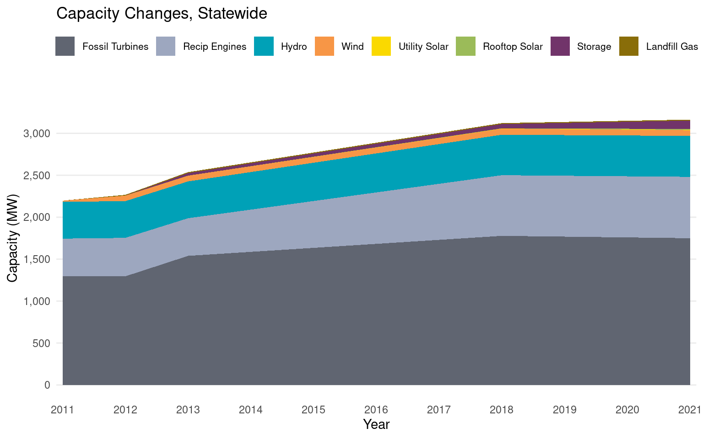

Plot.plot({
// Configure the plot
//title: "Capacity changes, Statewide",
insetLeft: 0,
insetRight: 0,
width: width,
// Configure the x-axis
x: {
tickFormat: "d",
label: "Year",
//domain: [2011,2012,2013,2018,2021]
},
// Configure the y-axis
y: {
grid: true,
label: "Capacity (MW)"
},
// Stacked area plot
marks: [
Plot.areaY(cap_data,
Plot.groupX(
{
y: "sum"
},
{
x: "year",
y: "capacity",
fill: "Prime Mover",
order: ["Fossil Turbines", "Recip Engines", "Hydro", "Wind","Utility Solar","Rooftop Solar","Storage","Landfill Gas"],
tip: {format: {x: "d"}}
}
)
),
Plot.ruleY([0])
],
// Configure the color scheme
color: {
domain: ["Fossil Turbines", "Recip Engines", "Hydro", "Wind","Utility Solar","Rooftop Solar","Storage","Landfill Gas"],
range: ["#606571", "#9da7bf", "#00a1b7", "#F79646", "#fad900","#9BBB59","#71346a","#896D09"],
legend: true
}
})6 Installed Capacity
Total Installed Capacity by Certified Utilities in Alaska, 2011-2021
6.1 General Overview
Generation capacity represents the maximum amount of electricity that can be generated at any given time dependent on certain conditions. The combination of generation sources is often referred to as the capacity mix. Changes in the capacity mix over time reflect decisions to build and retire generators. These decisions are a result of shifting costs, technological innovations, the normal aging of the generation fleet, and/or stakeholder policies. Due to data limitations, we show capacity levels for calendar years 2011-2013, 2018, and 2021. While we cannot observe year-to-year trends, there are enough years of data to visualize capacity trends from 2011 to 2021.
We begin this section by showcasing the increases in total capacity across the state. In 2011, it is estimated that the total statewide electricity generation capacity was 2,197 MW. We estimate that this has increased to approximately 3,163 MW in 2021 based on best available data. This represents an increase of 966 MW, or 44 percent increase since 2011. To illustrate this example, we show a stacked area chart in Figure 6.1 that showcases growth over time for various technologies.1

6.2 Coastal
For the coastal region, we observe a 121.2 MW increase in generation capacity (an increase of approximately 22.8 percent) between 2011 and 2021. Figure 6.2 shows the change in total installed capacity for each prime mover in the coastal region. This region saw additions of 38.9 MW of fossil turbines, and 28.9 MW of reciprocating engines. The remaining increases were renewable and storage capacity which we look at in more depth in Figure 6.3.
Across the 53.45 MW of added renewable and storage capacity , hydropower accounted for the bulk of the capacity additions with 41.95 MW. Storage capacity increased by 7 MW and wind generation capacity increased by 4.5 MW. Between 2013 and 2018, significant hydropower additions were made in the Southeast (19.4 MW), Kodiak (11.3 MW), and the Copper-River/Chugach (6.5 MW) AEA energy regions.
6.3 Railbelt
For the Railbelt region, capacity additions were dominated by more-efficient fossil fuel generating units and new battery storage. These additions are visualized in Figure 6.4. There were 761.9 MW of capacity additions between 2011 and 2021. The Railbelt region saw 207.3 MW of reciprocating engine additions and 390.2 MW of fossil fuel turbines. The remaining capacity additions were renewables and storage and are shown in Figure 6.5.
Total renewable and storage capacity in the Railbelt region increased by 164.41 MW. Notable additions included the commercial commissioning of the 18 MW Fire Island Wind site in September 2012 and the 25 MW Eva Creek Wind site in October 2012. Significant investments in storage capacity have also been made. Since 2011, 89.5 MW of storage, 43.49 MW of wind, 7.09 MW of hydro, 1.9 MW of utility solar, 10.93 MW of rooftop – also known as “behind-the-meter” – solar, and 11.5 MW of landfill gas have been added.
6.4 Rural Remote
The rural remote region saw an increase of 83.1 MW in capacity (a 32.63% increase) (Figure 6.6). Most of the increases in capacity were fossil fuel turbines (25.4 MW added on the North Slope) and reciprocating engines (45.65 MW). Renewable capacity is explored in further detail in the Figure 6.7.
This region saw an absolute increase of 12.05 MW of renewable capacity between 2011 to 2021. Over this time period, hydropower generation resources increased by 0.99 MW, wind increased by 6.51 MW, utility-scale solar increased by 1.31 MW and storage increased by 3.25 MW. Between 2018 and 2021, 2 MW of wind was retired in the Bering Straits energy region, 1.2 MW in Kotzebue, and 0.2 MW in the Aleutians, explaining the reduction in wind capacity between the calendar years.
Prime movers are categorized as follows. Fossil turbines include combined cycle turbines, gas turbines, and steam turbines. Reciprocating engines include internal combustion engines. Hydro includes hydraulic turbines and hydrokinetics. Wind includes wind turbines. Utility solar includes utility-owned photovoltaic (PV), and Rooftop solar includes customer-sited, behind-the-meter PV. Storage refers to batteries and flywheels.↩︎